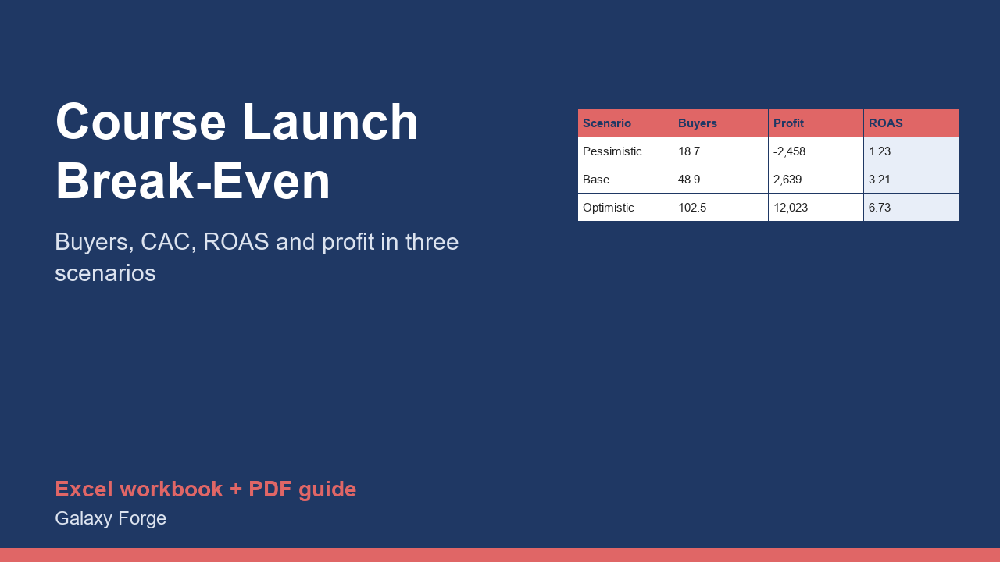

Model a course or digital-product launch from email list and ad spend to buyers, refunds, fees and profit, in three scenarios, and see how many sales you need to break even before you spend a dollar.
Launching a course is a bet: you spend on creation, tools and ads, then hope enough people buy. The bet is much easier to judge before you place it. This model converts your email list, ad budget and expected conversion rates into buyers, revenue, refunds, platform fees and profit.
It runs three scenarios side by side (pessimistic, base and optimistic) so you can see the range, not one number. For each it returns the buyers from your list and from paid traffic, gross and net revenue, profit after all costs, the return on ad spend (ROAS), the cost to acquire a paid buyer and the number of buyers you need to break even.
The break-even buyers number is the most useful figure on the sheet: it is a target you can measure against during the launch.
1) On Settings, enter your price, platform and payment fees, support cost per buyer, fixed launch costs and ad budget. 2) On Scenarios, enter for each case your list size, email click rate, page conversion on the list, cost per click, paid conversion and refund rate. 3) Read the profit, ROAS and break-even buyers on the Summary. 4) During the launch compare your real buyers with the break-even number each day.
Free guide: Online Course Launch Break-Even: How Many Buyers You Need Before You Spend
Price: $29, one-time. Download: digital_course_launch_break_even_model.xlsx (Settings, Scenarios, Summary) and this guide. Works in Excel 2016 or later, Excel for Mac and Excel on the web; opens in Google Sheets and LibreOffice.
New product, listed 2026-11-05: no sales or reviews yet. Example figures in the workbook are illustrative.
This workbook is a planning tool, not financial, tax, legal or marketing advice. Conversion rates, click costs and refund rates in the examples are illustrative, not benchmarks; your real numbers will differ and an untested launch can lose the whole ad budget.